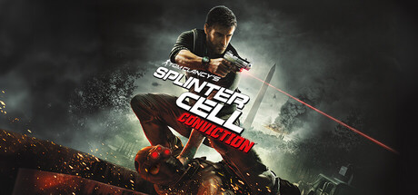

Splinter cell conviction
Resumen
Splinter Cell: Conviction, lanzado en 2010 por Ubisoft, continúa la historia de Sam Fisher, ex agente de Third Echelon. Tras descubrir que la muerte de su hija Sarah no fue un accidente, Fisher se embarca en una misión personal para desentrañar una conspiración que involucra a su antigua organización y a altos niveles del gobierno.
El juego introduce un tono más personal y visceral, alejándose del espionaje clásico para centrarse en la venganza y la acción directa. Fisher utiliza nuevas mecánicas como “Mark & Execute” y el sistema de “Last Known Position”, que permiten un estilo de juego más dinámico y agresivo.
Conviction combina sigilo y acción con una narrativa intensa, mostrando a un Sam Fisher más humano, vulnerable y decidido a descubrir la verdad detrás de la traición que lo rodea.

Comprar en Steam- Duración: ~8 horas (historia principal), +15 horas con modos extra
- Peso: ~10 GB en PC
- Fecha de lanzamiento: 13/04/2010
Trailer / Gameplay
Requisitos
- SO *: Windows XP/Vista/7
- Procesador (mínimo): Intel Core 2 Duo 1.8 GHz / AMD Athlon X2 64 2.4 GHz
- Procesador (recomendado): Intel Core 2 Duo 2.6 GHz / AMD Phenom X3 2.8 GHz
- Memoria: 1.5 GB RAM (mínimo) / 2 GB RAM (recomendado)
- Gráficos (mínimo): NVIDIA GeForce 7800 / ATI Radeon X1800 (256 MB VRAM)
- Gráficos (recomendado): NVIDIA GeForce 8800 / ATI Radeon HD 3870 (512 MB VRAM)
- DirectX: Versión 9.0c
- Almacenamiento: 10 GB de espacio disponible
- Notas adicionales: Requiere conexión a Internet para activación en Uplay
Contenido adicional (DLC)
| Nombre | Fecha |
|---|---|
| Deniable Ops: Insurgency Pack | 27/05/2010 |
| Extra Co-op Missions | 2010 |
| Weapon & Skin Packs | 2010 |
Comentarios
- Ana: Me encantó este juego.
- David: Muy buena historia y jugabilidad.